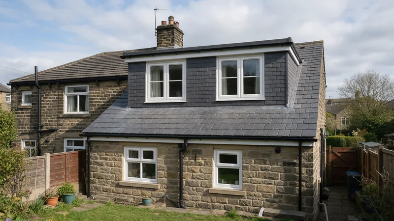

What the box actually buys you
People ask for a dormer because they have been told it gives you more space, which is true but is not the useful way to think about it. What a dormer gives you is a flat ceiling and a vertical wall, and those two things are what make a loft feel like a bedroom instead of a tent.
Without them, every wall in the room is a slope. You cannot put a wardrobe against a slope. You cannot stand at a basin under one. A bed goes under it happily, because you are lying down, and that is about the limit. Build a box out of the back and the middle third of the room gets a ceiling that does not move and a wall you can stand at, and the rest of the room arranges itself round that.
Where it goes, and why it is nearly always the back
Rear dormers on ordinary houses are the common job, and the reason is partly planning and partly the look. A box on the front slope faces the street, changes the house as people see it and in most places needs a full planning application. A box on the back faces your garden, and a good number of them are done under permitted development instead. We check that for your actual address, because one street can have two different answers.
The size is a decision too. A dormer that runs the full width of the roof gives the most floor but can look like a shed stuck on the back. One that leaves a margin of original slate at each side and under the eaves reads as part of the house. We will show you both on the drawings and say which one we would do on your roof.
The finish is what dates it
Three things make a dormer look bought rather than built, and all three are decided before it goes up. What the cheeks are clad in, and slate or tile hung to match the roof beats anything flat and white. Whether the windows line through with the ones below, which costs nothing and is noticed by everybody. And how the flat roof meets the slate, because a thin, tidy, well dressed junction looks like a roof and a thick one looks like an afterthought.

Generated photoGenerated for this demo. Not a photograph of a real job.
 Generated photo
Generated photoThe fortnight the roof is open is the part of the job that depends on weather, and no honest programme pretends otherwise.
In section
The same loft, drawn both ways.
One roof, one floor, one standing line. On the left the slope is left alone and the window goes in it. On the right a box is built out of the back, and the ceiling goes flat where the box is.
Roof line untouched · no scaffold alley · quickest
Nothing changes outside
The roof stays exactly where it is and the windows sit in the plane of the slope. From the street nothing has happened. It is the quickest way up there, the least disruptive, and on a roof with height to spare it gives you a proper room. On a shallow roof like the one drawn here it gives you the strip up the middle and not much either side of it.
Flat ceiling · a wall to stand at · the most room
The box is what buys you the room
Build out of the back slope and the ceiling goes flat where the box is, so the floor you can stand on runs from the middle right out to the dormer wall. That wall is the part people underrate: it is somewhere to put a wardrobe, a bed head or a basin without ducking, and you only get it by changing the roof. It needs scaffolding, it takes longer, and from the back of the house it is obvious.
Drawn in the browser. Both halves share the same pitch and the same floor, so the shaded areas can be held against each other.
In section
What the new floor is made of.
Five layers from the top down. The one people are surprised by is the last: your existing ceiling stays exactly where it is, and the new floor goes over the top of it without touching.
Drawn in the browser rather than photographed. The thicknesses are not to scale.
On the job
How this one usually goes.
- Up there with a tapeHeight from the joist to the ridge in the middle and at both ends, what is holding the roof up, where the stairs could land, and a note of the tank, the pipes and the wiring. Half an hour.
- Drawings and the engineerMeasured drawings, then a structural engineer sizing the beams and the new floor. The planning position checked for your address, and the building control application in.
- Scaffold and the new floorScaffold up with a tower over the roof. Any steels lifted in and bedded on padstones, new floor joists across, deck down. Now there is a floor to work off.
- The roof opensThe slope stripped, the opening cut, the dormer framed in timber and sheeted over temporarily. The noisy fortnight, and the one that watches the forecast.
- WatertightFlat roof on, cheeks clad, lead work dressed in, windows in. The house is sealed again and the inside work can start.
- Stairs, insulation, lining outStair opening cut and the flight in. Insulation between and under the rafters with an air gap above it. Plasterboard, skim.
- Second fix, alarms, sign offDoors, skirting, the mains linked alarms, the electrics tested, decorating, and the building control sign off paperwork handed over.
A sample running order for this demo. Yours depends on the house and on what the drawings come back saying.
Questions
Asked about this job.
Do I need planning permission for a rear dormer?
Often not, and often is not always. A good number of rear dormers on ordinary houses fall under permitted development, which means no full application, and we would get you a lawful development certificate so there is something on paper when you sell.
What takes those rights away: a flat rather than a house, a house that has already used them up on a previous extension, a conservation area, a listed building, an article 4 direction, or a dormer on the slope facing the road. Those are the common ones and there are others. We check your address rather than the street, because a terrace can have one house in and one house out.
How much of the back of the house will it cover?
That is a design decision and you should see it drawn both ways before you pick. A full width dormer gives the most usable floor. One set in from the sides and up from the eaves, so a band of the original roof shows all the way round, looks far more like part of the house and gives up surprisingly little room.
What we would say is that the ones people regret are nearly always the full width ones on a house where the neighbours are all original. It is not a planning problem, it is a looking at it for twenty years problem.
What are the cheeks clad in?
Slate or tile hung to match the roof wherever we can, because it reads as roof rather than as an addition. Standing seam metal is the other one that looks deliberate. Flat white boarding is the cheapest and it is also the thing that makes a dormer look like a portable building.
The flat roof itself is usually a single ply membrane or hot applied felt, and the detail that matters is how thin and tidy the edge is where it meets the slate.
Can the windows be anything other than plain casements?
Yes, and it is worth a thought because the dormer face is the one bit of the job the neighbours see every day. Casements that line through with the windows on the floor below is the safe and usually the best answer. A pair of smaller windows with a pier between them suits a stone house better than one wide one.
French doors with a juliet balcony are a popular ask. They work, they need a guarding detail and they change the planning position in some areas, so that one gets checked early rather than added late.
Is a dormer warmer or colder than the rest of the house?
It should be neither, and if it is colder somebody has rushed the insulation. A dormer has more flat roof and more wall than a plain roof slope, so there is more to insulate rather than less.
The two places it goes wrong are the junction between the flat roof and the slope, and the cheeks, because both are awkward and both are easy to leave a gap in. They get done properly and they get checked before the plasterboard hides them, which is one of the reasons building control comes out at that stage rather than at the end.
General trade knowledge written for this demo, not advice on your property.
Our work
Sample jobs like this.
Generated photoFramed up and sheeted overDewsbury · Sample Generated photoDormer room, finishedMirfield · Sample
Generated photoDormer room, finishedMirfield · Sample Generated photoLined out, ready for plasterHolmfirth · Sample
Generated photoLined out, ready for plasterHolmfirth · SampleMade up samples with generated pictures. Tap one for the detail.
Also
The other things we do.
Rooflight conversions
The roof line left exactly as it is, with windows let into the slope. The cheapest way up there when the roof already has the height to spare, and the quickest.
More →Hip to gable conversions
For the semi or the end terrace where the roof slopes in at the side and the loft runs out to a point. The end wall gets built up square and the pointed bit becomes room.
More →Loft bedrooms with en suites
A bedroom with its own shower room, laid out so the shower and the basin sit where the ceiling is highest and the bed goes under the slope, which is the only way the room works.
More →Loft boarding and storage
Not a conversion. Boards on raised legs above the insulation so the insulation still works, a hatch you can get through and a light that comes on. The job most people want first.
More →Staircase design for lofts
Where the flight goes, which way it turns and what it takes off the floor below. Decided first, on paper, because everything else in the loft follows it.
More →Shall somebody come up and look?
Tell us the house and your postcode. Half an hour with a tape in the loft and on the landing tells us more than any photograph.